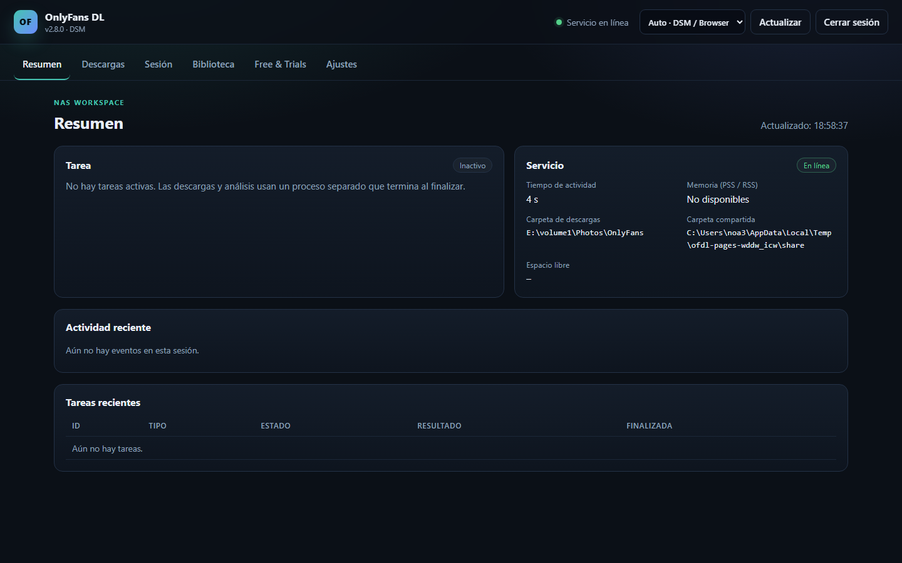

Tu biblioteca, directamente en el NAS.
Un paquete nativo para DSM 7.2 del descargador de OnlyFans. Instala un entorno Python 3.13 privado y ejecuta una pequeña interfaz web en el NAS. Las descargas, los análisis de suscripciones y las vistas previas se ejecutan en un proceso de trabajo separado y temporal.
Qué hace
Paquete nativo
Se instala desde Package Center. No se necesitan pasos manuales de Python, pip ni SSH para el uso normal.
Servicio de control pequeño
El servicio permanente solo usa la biblioteca estándar. Las bibliotecas pesadas solo las carga el proceso temporal.
Interfaz web
Importación y prueba de sesión, selector de carpetas, selección de creadores, descargas, pausa/cancelación, programación y estado.
Biblioteca existente
Reutiliza archivos, estructura de carpetas, archivos .part y el manifiesto .ofdl.sqlite3 existente.

Instalación
- Añadir la fuente SynoCommunity.
Package Center → Ajustes → Orígenes de paquetes →https://packages.synocommunity.com/ - Instalar el SPK.
Package Center → Instalación manual. Python 3.13 se instala como dependencia. - Definir la contraseña web.
El asistente pide una contraseña. Abre el paquete desde el menú de DSM ohttp://<IP-DEL-NAS>:8765/. - Elegir una carpeta e importar una sesión.
En DSM, concede asc-onlyfansdlacceso Lectura/Escritura solo a la carpeta compartida elegida (Permisos → Usuario interno del sistema). Guarda una ruta de biblioteca existente en Ajustes. No se crean carpetas compartidas automáticamente.
Modelo de seguridad
El paquete se ejecuta con la cuenta de servicio DSM sin privilegios sc-onlyfansdl.
No solicita root ni pertenencia al grupo de administradores. La interfaz web tiene su propia contraseña;
no es el SSO de DSM. La sesión se guarda con modo 0600 y nunca se escribe en ajustes o registros.
Para acceso remoto, coloca el proxy inverso HTTPS de DSM delante del puerto 8765. No expongas el puerto directamente a Internet.
Almacenamiento y compatibilidad
Biblioteca
Una única ruta guardada explícitamente en Ajustes para descargas, biblioteca y programación. Los archivos permanecen en su sitio. Las actualizaciones piden confirmar la ruta; las carpetas compartidas antiguas no se eliminan.
Memoria
El servicio de control permanece pequeño. El proceso de trabajo termina tras cada tarea. El objetivo de 50 MiB PSS en reposo aún no se ha verificado en el DS723+.
Programación
Una hora diaria puede iniciar los ajustes de descarga guardados. Nunca se ejecuta más de una tarea a la vez.
Idioma e inicio de sesión
Siete idiomas de interfaz, incluidos textos principales en italiano, neerlandés y portugués. El modo Auto usa el idioma DSM disponible y luego el navegador; la elección manual tiene prioridad. Los textos faltantes vuelven a inglés/alemán. La sesión persiste tras recargar y actualizar.
Estado y recuperación
Recargar restaura la tarea actual y los últimos eventos. El análisis y la transferencia de archivos tienen indicadores separados. Los errores temporales de API muestran una espera de tres minutos cancelable.
Free & Trials
Búsqueda de solo lectura y resuscripciones diarias opcionales solo para perfiles autorizados explícitamente y reverificados como gratuitos permanentemente. Las pruebas siguen en la web por posible renovación de pago. Un cambio de precio entre la comprobación y la respuesta no puede excluirse por completo.
Documentación
README
Resumen, instalación y notas de versión (EN).
Instalación
Configuración DSM paso a paso, consentimiento de almacenamiento y solución de problemas (EN).
Arquitectura
Servicio de control, proceso de trabajo, tareas SQLite y permisos (EN).
Informe de pruebas
Resultados locales y lista de comprobación del hardware DSM (EN).
Seguridad
Gestión de sesión, exposición y restablecimiento (EN).
Fiabilidad
Reconexión, parada completa y límites del resubscribe gratuito (EN).